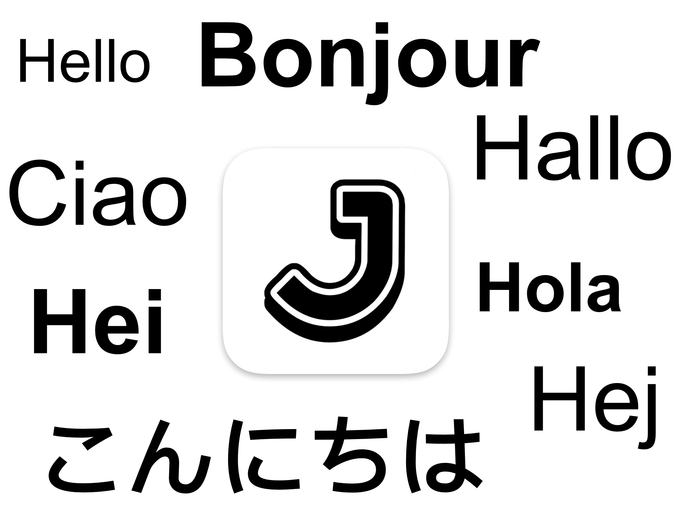

Álvaro Ramírez
Journelly 1.1 released


Journelly 1.1 available on the App Store
What is Journelly?
Journelly feels like tweeting but for your eyes only.
A fresh take on frictionless note-taking for iOS, powered by Org plain text.
- Save cooking recipes, movies, music, restaurants, coffee shops…
- Jot down your thoughts.
- Save your favorite quotes.
- Use it as a journal, memo book, or notes.
- Write your shopping lists.
- Document your travels.
- Lots more…
Check out journelly.com for details.

What's new?
Journelly v1.1 is the first release since launching. It adds support for 10 new languages and delivers the first round of feature requests and bug fixes.
New features
- New languages:
- Danish
- Dutch
- Finnish
- French
- German
- Italian
- Japanese
- Norwegian
- Spanish
- Swedish
- Easily add hashtags using the new picker (most requested feature).
- Hashtags are now highlighted in the editor.
- Automatically capture selected text in Safari.
- Paste images directly from the clipboard.
- Tap on email addresses to compose a new message.
- New context menu options:
- Set location as Home.
- Open location in Maps.
- Copy text.
- iPad keyboard shortcuts
- ⌘-N Create a new Entry
- ⌘-S Save the current Entry
- ↑/↓ Select entry in list
- ↵ Edit selected entry
- Uses the full date format based on your locale.
Fixes
- Prevents the Esc key from discarding unsaved changes.
- Resolves incorrect link icon colors in Light Mode.
- The About screen is now available on fresh installs.
- Fixes issue where the navigation bar became inaccessible when viewing markup.
- Locations are now only clickable when valid coordinates are available.
A happy Journelly user
Just as I'm getting ready to announce Journelly's 1.1 release, Ellane (from ellanew.com) shared a wonderful blog post on her experience using version 1.0:
Journelly is the Org App You’ll Love (Even if You Don’t Do Org).
I'm particulary excited to hear from Ellane given her Plain Text; Paper, Less philosophy.
"It’s the perfect mix of simplicity and low-tech plain text wizardry"
"It takes a very particular set of features for a new app to impress me enough to hit the purchase button as fast as I did with Journelly."
"Journelly is the first Org-powered app I’ve seen that lays out the welcome mat for people who don’t even know what Org is, never mind how to use it."
Ellane / ellanew.comAs an org mode enthusiast myself, I'm delighted to hear Journelly is paving a gentle road for org newcomers.
Ellane's post also has a great list of features requests. Lucky for me, I can report at least two of them are covered by today's release:
- The new hashtag picker.
- Pasting images from the clipboard.
Be sure to check out Ellane's post, as she covers many details I'm not mentioning here. But lemme share one last tip I learned from her post today…
Ellane's iCloud tip
Today I learned something new from Ellane’s post: you can Control-click the Journelly iCloud Drive folder on your Mac and select "Keep Downloaded" to ensure your notes are always available offline. Super handy, specially for those of us using Emacs on macOS.
Markdown enthusiast? Enquire within
Currently, Journelly stores entries in Org plain text format, but Markdown support is on the way. Interested in Markdown? Please reach out. The more requests I receive, the sooner it will land.
On the topic of Markdown: I also run lmno.lol, a Markdown-powered blogging service. Simple and focused, without the frustrating parts of the modern web. Custom domains are welcome too! My xenodium.com blog runs off lmno.lol.